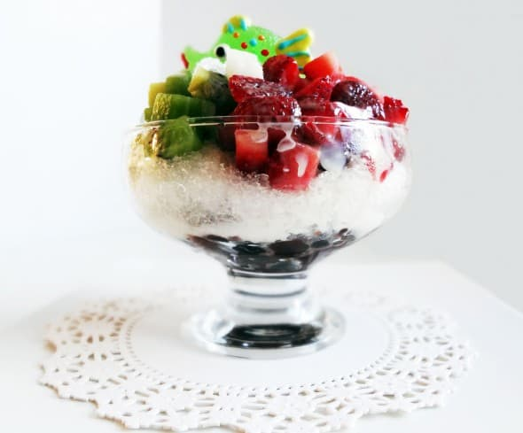

Patbingsu

Description
It is a Korean dessert classic for cooling you down on any hot summer day!
Ingredients
- 1 cup sweet red beans
- 1 cup sugar
- 1 tablespoon sesame oil
- 1 teaspoon vanilla
- 1/2 teaspoon Kosher salt
- 1 1/2 cup shaved ice
- 2 tablespoons sweetened condensed milk
- 5 chopped rice cakes
- 5 strawberries
Steps
- Rinse and strain 1 cup of red beans and place into a thick-bottomed pot.
- Add 4 cups of water into the pot.
- Boil the red beans to low heat for 10 minutes, then boil to a simmer for 1 hour.
- Drain the water.
- Mix 1 cup of sugar, 1 tsp of vanilla, and 1/2 tsp Kosher salt with the beans.
- Stir the beans over low heat for 5 minutes.
- Place the sweet red beans on the bottom of the bowl.
- Place 1 1/2 cup of shaved ice over the sweet red beans.
- Add sices of strawberries, 2 tbsp of condensed milk, and 5 chopped rice cakes on top of the ice.